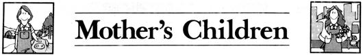
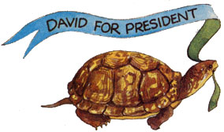
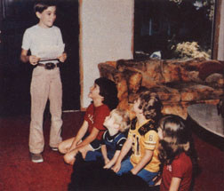

MOTHER feels strongly that youths can be creative "doers," working toward more ecological and self-reliant lifestyles . . . whether their tasks be raising chickens on a farm or maintaining rooftop container gardens in the city. To support the endeavors of our often overlooked "underage" citizens, we're glad to publish well-written articles from younger children and teenagers concerning projects they've undertaken. However, we recommend that all young authors query (that is, send us a letter telling about the story they'd like to do) before writing a full article. Address inquiries to Mother's Children, THE Mother Earth News(restricted) 105 Stoney Mountain Rd., Hendersonville, NC 28791.
I'm basically a very shy person. So when I somehow got nominated by my sixth-grade class for president of the school student body, you can imagine how uncomfortable I felt. I started to decline the nomination, but then thought I might be missing out on something really special. So I decided to give it a try.
You know, shy people hate to fail more than anyone does. So I was unsure of myself all the way through the campaign. (I ran against two other, popular, kids.) But I got encouragement from my family and from my best friend, Kelly, who I chose as my manager.
We had to write a campaign speech for me and an introduction speech for Kelly. But how? I didn't even know what a school president could do, especially since this was the first year our school was having elections. To get ideas, I asked other kids what they wanted changed in the school. Boy! Don't ever do that! Everyone wanted something different. One kid even wanted a new flag design for the whole country! There were a couple of good ideas, though, so I added them to my speech.
But then the assistant principal, Mr. Blake, warned us not to promise things we couldn't deliver. Well, there went that speech! My second draft was filled with lines like "I would like to see . . ." and "I hope to be able to . . ." I wrote that I would try to get us a shade tree for the playground and pay for it with a can-collecting drive. (The kids I talked with liked that.) Then I added, "How's about an all-school talent show?" (They loved that!) Another idea I had was putting a mirror in the girls' bathroom.
Kelly was a good worker. And even though we didn't know what we were doing, we began to have fun doing it. We got poster board and lined my name in glue and glittered it. Then I added a photo of me and wrote my slogan: "Putting you first is my goal!" The posters came out pretty well, but I hung them too low at school. The other candidates put their posters above mine, where they were noticed more. And, since my posters were low enough to reach, I also ended up with .mustaches on my photos.
The next step in my campaign was to get materials to make badges for kids to wear around school (and be sort of like free advertising for me). I got a lot of supplies . . . glue, construction paper, sequins, glitter, ribbon, and whatever else I could find around the house. My allowance was invested in little jingle bells and other things that could be glued on the paper badges. I got the bells from a discount paper supply company. They only cost a few cents each and really added appeal.
I also made rocket-ship badges that said "Fly high with David for president!" and little paper chains that I attached to badges that said "Link up with David for president!" Everyone loved helping me make the badges. My whole family pitched in, and even friends from school got into the spirit and came over to help. What fun!
The girls really liked the badge that said "A vote for David rings the bell!" because it had a tiny bell on it that jingled every time they moved. In fact, girls loved them so much that I was swamped by girls! Even the girl candidate running against me for president took one and wore it! And you know what else? I got so busy passing out badges and smiling at kids I didn't even know that I forgot to be my scared, shy self.
Then came the day I had to give my campaign speech in school. As I listened to the other candidates, I began to wish I could rewrite my speech, and I started looking for the nearest exit. But it was too late! Kelly was at the microphone, introducing me. For a second I thought the microphone was turned off, because Kelly was so scared he couldn't speak above a whisper.
As I sat there, I could just see me dropping my speech . . . or tripping, and the kids laughing at me. But when I got up there and saw all of those smiling faces, I wasn't nervous at all. I was terrified! I began reading, pretending I was home in front of a mirror like when I had practiced.
Suddenly, it was over. I had gotten through it. They even clapped. Wow! What a great feeling!
When the elections were over and all the votes were in, we had an assembly to announce the winners for the different offices. As I sat there waiting for the results, I sort of wished we could run the days backward to the beginning of the campaign. I wanted to win, but I knew that wasn't the best part. The best part was the excitement of getting to know the kids and working toward a new goal. I thought of a poem I had read that said "When this race is fully won,/You'll find the trip was half the fun."
Then I was jolted out of my seat by Kelly. He was pushing me to the platform, shouting, "We did it! You're the president!"
I just stood there with a dumb look on my face. I couldn't believe it! Me! Shy little David had won the presidency over the two most popular kids in school!
Looking back on all this now, I have to say that being president isn't all roses. There are lots of thorns. Kids and teachers expect more (even too much) of you. And remember that campaign promise about the talent show, the one that the kids loved? Well, the teachers didn't! It made a lot of extra work for them. It took me a whole year of working, talking, even begging and praying, to get those so-easily-said promises fulfilled. Some people think I'm a good president, and some don't. Even so, I wouldn't have missed the great fun of the campaign and the chance to come out of my shell for all the jelly beans in the White House!
Win or lose, it's the fun and growing inside along the way that are the good of school elections. I made some mistakes . . . but some new friends, too. Even my enemies respect me more for trying to do something for the school. Would I run again? Well, next year is another year. Who knows
|
 |
 |
 |